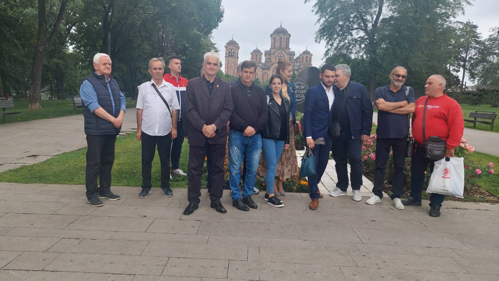

УНДРУЖЕЊЕ РАТНИХ ВЕТЕРАНА
У складу са одредбама чл. 11. и чл. 12. Закона о удружењима („Службени лист РС“, бр.51/09) на оснивачкој Скупштини одржаној дана 10.02.2023. године у Београду, усвојен је: СТАТУТ УДРУЖЕЊА БОРАЦА И РАТНИХ ВОЈНИХ ИНВАЛИДА РАКОВИЦЕ "ЗМАЈ ОД АВАЛЕ" ЦИЉЕВИ И ОБЛАСТИ ДЕЛОВАЊА Члан 1. УДРУЖЕЊЕ БОРАЦА И РАТНИХ ВОЈНИХ ИНВАЛИДА РАКОВИЦЕ "ЗМАЈ ОД АВАЛЕ" је непрофитно удружење грађана основано на неодређено време ради остваривања циљева у области афирмације, заштите и унапређење друштвеног и материјалног положаја борачке популације и неговање традиције српских ослободилачких ратова. Члан 2.
Циљеви УДРУЖЕЊА БОРАЦА И РАТНИХ ВОЈНИХ ИНВАЛИДА РАКОВИЦЕ "ЗМАЈ ОД АВАЛЕ" су:
1. Рад на очувању, неговању и афирмацији традиције српских ослободилачких ратова;
2. Рад на очувању и унапређењу позитивних законских и под законских аката и прописа којима се уређују и унапређују друштвени, социјални, економски и здравствени положај борачке популације;
3. Афирмација чланова у свим областима јавног и друштвеног живота.
4. Стварање услова за материјалну и не материјалну помоћ чланству и заштита и унапређење њихових права у свим областима јавног живота;
5. Обезбеђење услова за обављање привредних, услужних и других делатности у циљу побољшања материјалног положаја чланства;
6. Пружање финансијске, хуманитарне и сваке друге помоћи чланству;
7. Сарадња са државним, јавним и приватним предузећима, установама, институцијама и Фондовима, у земљи и иностранству, ради обезбеђења свих додатних видова заштите, подршке и помоћи чланству;
8. Сарадња са сродним организацијама, у земљи и иностранству, на промоцији патриотизма, мира, толеранције и људског достојанства.
Свечано отварање изложбе поводом 220 година од подизања првог српског устанка, у просторијама Дома Војске у Београду.

Обележавање дана примирја у Првом Светском рату, гробље Совјетских ослободилаца Београда.


Прослава 120 година од чувене Брегалничке битке у Првом Светском рату и велике победе српске над Бугарском војском.
Посета Народној Скупштини Републике Србије.


Помен пострадалим српским жртвама у шиптарском погрому 24. марта, црква Светог Марка у Београду.
